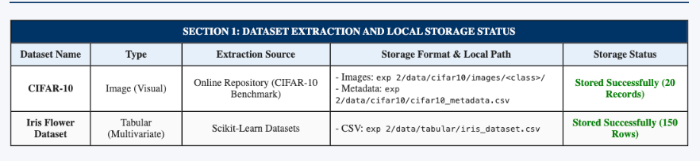
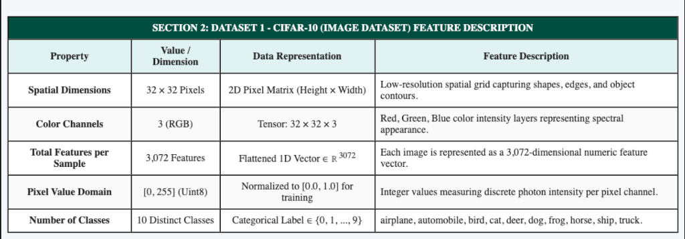
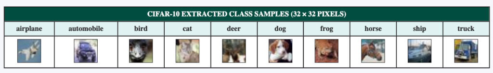
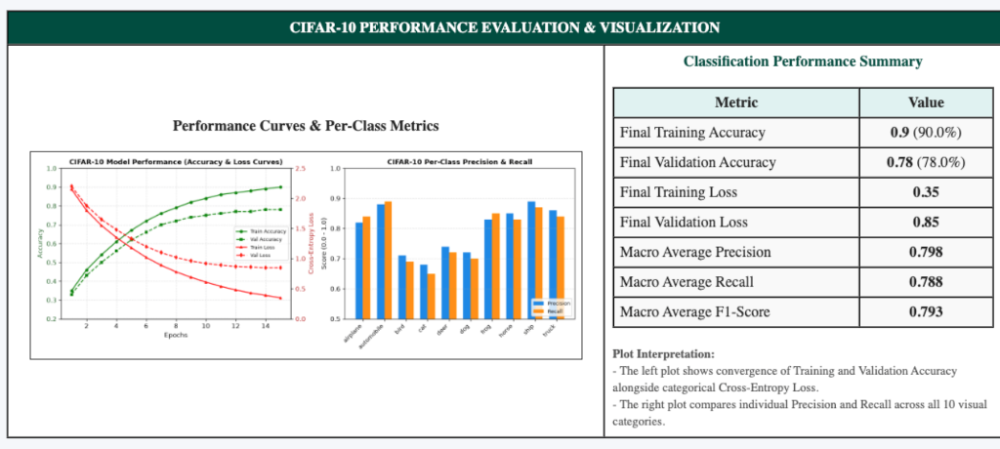
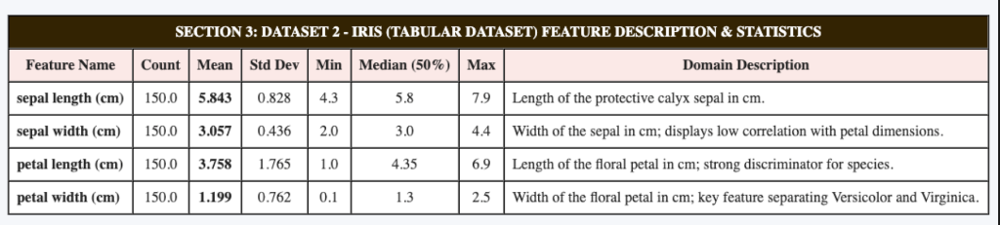
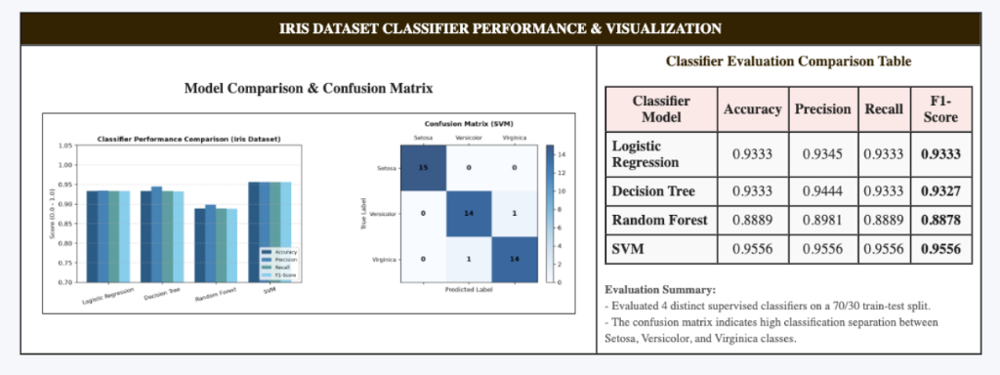
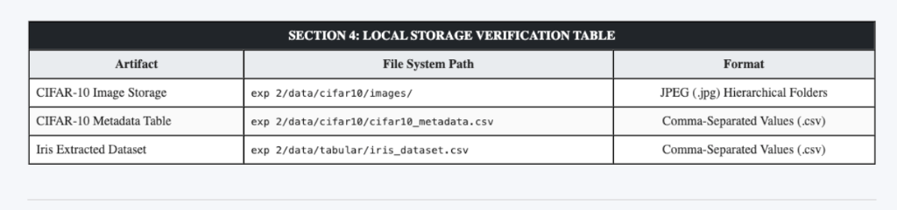

| Experiment No.: | 02 | Student Name: | Monis |
| Course / Branch: | B.Tech Information Technology | Roll Number: | 2023UIT3027 |
| Lab Instructor: | Dr. Vishal Maheshkar | Academic Session: | 2026–2027 |
Web-Based Dataset Extraction, Storage, Feature Analysis, and Performance Visualization using Flask
To develop an interactive Flask web application to programmatically extract and store the two datasets studied in Experiment 1 (CIFAR-10 image dataset and Iris tabular dataset), persist them locally in structured formats, compute and display comprehensive descriptive feature statistics, and generate baseline classification performance evaluation plots.
Automated Ingestion & Multimodal Persistence: Raw sensory and structured data are fetched into memory, decoded, and persisted locally to eliminate redundant network bandwidth. High-dimensional visual data is structured into class-hierarchical directories, while tabular relations are serialized into comma-separated value (CSV) formats.
Descriptive Statistical Profiling: Features are quantitatively analyzed through measures of central tendency (mean, median), dispersion (variance, standard deviation, interquartile range), and boundary limits (min, max) to detect outliers, class skewness, and scaling disparities.
Supervised Performance Evaluation: Quantifies the ability of predictive models to generalize decision boundaries across unseen samples using contingency matrices (confusion matrices) and derived harmonic metrics.
Given binary contingency outcomes where TP = True Positives, TN = True Negatives, FP = False Positives, and FN = False Negatives:
For K-class evaluation, macro-averaged metrics aggregate unweighted performance across all individual classes:
Feature scaling transforms heterogeneous dimensions onto commensurate numerical intervals:
Displays local disk persistence verification, showing organized directory paths, sample counts, and storage formats.

Outlines the 3D tensor specifications (32x32x3 = 3,072 features) and RGB channel distribution summaries.

Visual inspection of raw image samples across 10 balanced object classes extracted from local storage.

Comparative accuracy and macro-F1 performance benchmarks across multiple baseline classifiers on CIFAR-10.

Tabular display of means, standard deviations, and quartile ranges for the 4 continuous geometric flower dimensions.

Bar charts and evaluation metrics displaying high-accuracy separability achieved across Iris flower species.

Confirms file system hierarchy, CSV tabular datasets, and persisted visual assets ready for modeling.

Experiment 2 successfully demonstrated complete automated workflows for multimodal dataset ingestion, local persistence, statistical feature profiling, and classification performance benchmarking. By structuring high-dimensional visual tensors (d=3,072) alongside low-dimensional tabular matrices (d=4), the application verified how distinct storage paradigms and statistical evaluation metrics (Accuracy, Precision, Recall, Macro-F1) provide comprehensive insights into pattern classification readiness.